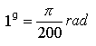
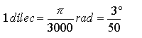
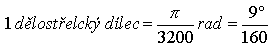
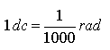

Dílec  Dìlostøelecký dílec  Matematický dílec  Dílcové míry se používají pøedevším tam, kde je potøeba urèit výšku, popøípadì vzdálenost, pøedmìtu pozorovaného pod urèitým úhlem.
Dílec

Dìlostøelecký dílec

Matematický dílec

Dílcové míry se používají pøedevším tam, kde je potøeba urèit výšku, popøípadì vzdálenost, pøedmìtu pozorovaného pod urèitým úhlem.